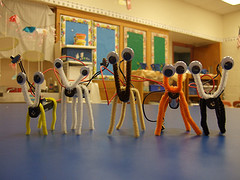
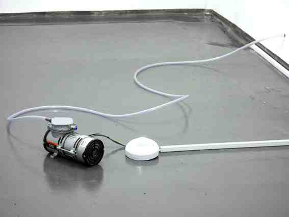

people doing strange things with electricity
The 22.98977th dorkbot-nyc meeting took place at 7pm on Wednesday, September 2nd, 2009 at Location One in SoHo.
It featured the silvery and highly reactive:
Roberto Tobar sent some pics from the meeting. Thanks!

Gaelen Hadlett: Electric Home Ec
While lending a hand at a couple local elementary schools, I work with kids on all sorts of projects involving engineering, science, and programming mixed in with everyday arts and crafts. I'll share highlights and missteps of past projects and the kids' responses to the advanced subject matter.
http://www.sunsetspark.org
Hye Yeon Nam: The Sound of Kiss
The Sound of Kiss facilitates an amorous ambience in which couples digitize their love while kissing. One wears a headset and the other's tongue is affixed to a magnet. When they kiss, the magnet and the electro-magnetic sensor interact to create spontaneous music. The musical composition depends on how far one's tongue is away from the other's lips/tongue and their style of action.
http://www.hynam.org/HY/sou.html
Ben Woodeson: The Health and safety Violations Trained in Glasgow, Scotland, Ben Woodeson now lives in London, England. His practice revolves around absurd and quietly confrontational sculptures; the works set out to challenge the viewer and the exhibiting institution in a playful kind of art chicken. Since December 2008 he has been working on a new series of "deliberately dangerous" works entitled "The Health and safety Violations" and as part of Location One's Virtual Residency programme he has been collaborating with the artist Ursula Endleicher, they have never met but will spend the last week before the exhibition opens on 9/9 finalizing works together. He has shown throughout Europe, Canada, and America and he has an upcoming solo show at Electrohype in Malmo, Sweden.
http://www.woodeson.co.uk
http://vres.location1.org
http://www.electrohype.org
Next meeting: 07 October 2009